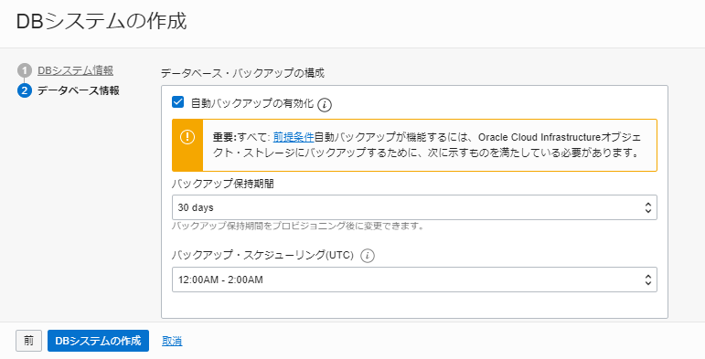
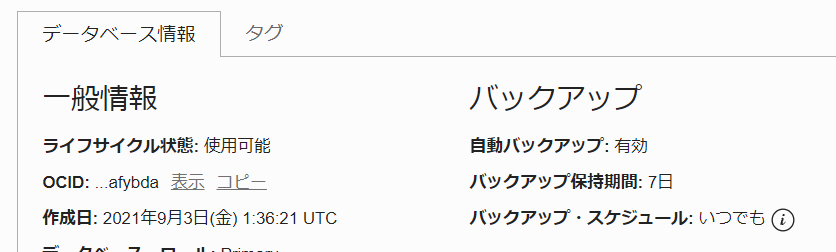
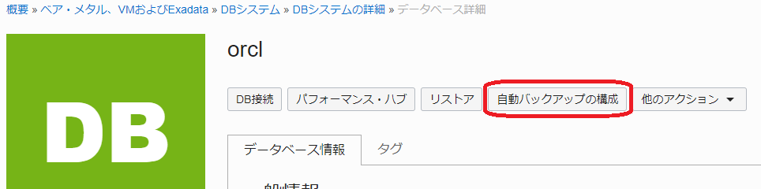
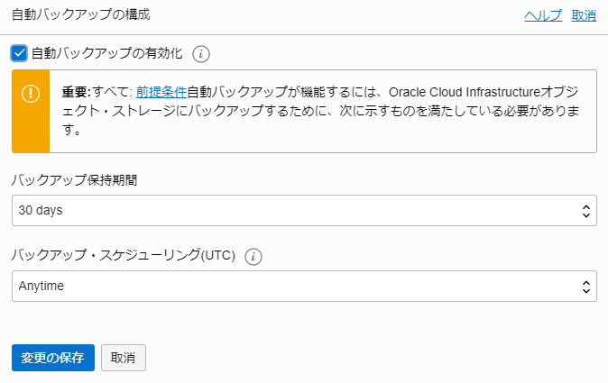
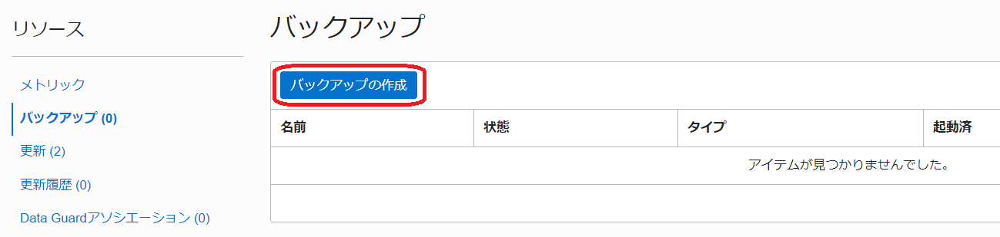
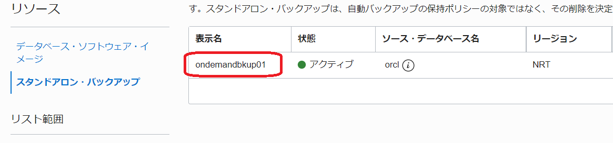

はじめに
サービスを利用していくにあたり、利用している環境のインスタンスやデータが壊れてしまった場合や、過去の時点にデータを戻したい場合など、何か起きた時のデータ復旧のためにバックアップやリカバリについての検討は重要です。
BaseDB では、RMANを利用した自動バックアップ機能が利用可能で、リカバリも最新時点やPoint in Time Recovery(PITR)の任意の時点まで復旧ができます。
ここでは、OCI コンソールから自動バックアップを構成するまでの手順についてご紹介します。
前提条件 :
- Oracle CloudでOracle Databaseを使おう を通じて Oracle Database の作成が完了していること
注意 チュートリアル内の画面ショットについては現在の画面と異なっている場合があります。
目次
- 1. 自動バックアップの前提条件を確認する
- 2. 自動バックアップの設定をしよう
- 3. 自動バックアップの設定を変更しよう
- 4. オンデマンド・バックアップを取得しよう
- 5. 取得したバックアップを確認しよう
所要時間 : 約30分
1. 自動バックアップの前提条件を確認する
まずは設定するにあたり前提条件を確認してみましょう。 オブジェクト・ストレージに取得することを前提にまとめています。DBシステム内(FRA)にとる場合など、CLI(dbcli)で設定する場合には、バックアップはコンソールからの管理対象外となります。
- 必要なエディション
- 自動バックアップ機能は全エディションで利用可能
- 並列実行(チャネル数やセクション・サイズの指定など)や高速増分バックアップなどを使う場合にはEnterprise Edition以上が必要
※特にリストア時間(RTO)の観点で、並列処理でのリストアができることはメリットになります。RTOが厳しい場合には、Enterprise Edition以上をおすすめします。
- Oracle Cloudのインフラ側の前提条件
- 管理ユーザーのIAMサービス・ポリシーでの権限が付与済
- DBシステムからオブジェクト・ストレージへのアクセス設定(VCNでサービス・ゲートウェイの利用がおすすめ)
- DBシステムとデータベースの状態
自動バックアップの機能が動作するためには、データベースが下記の状態である必要があります。下記の状態ではない場合、バックアップジョブが失敗する可能性があるのでご注意ください。- データベースのアーカイブ・モードがARCHIVELOG(デフォルト)に設定されている。
- データベース・ホスト・ファイル・システムの/u01ディレクトリに、バックアップ・プロセスの実行に十分な空き領域がある。
- Oracleユーザーの.bash_profileファイルに、対話型コマンド(oraenvなど、エラー・メッセージまたは警告メッセージを生成するコマンド)が含まれていない。
- sqlnet.oraファイルのデフォルトのWALLET_LOCATIONエントリが変更されていない。
- 標準のRMANコマンドを使用して、RMANバックアップ設定が変更されていない。
2. 自動バックアップの設定をしよう
次に自動バックアップの設定方法を紹介します。 自動バックアップは DBシステム作成時もしくはデータベース作成後に構成する事ができます。
- DBシステムの作成時に構成する場合
データベース情報 を設定する画面の 『データベース・バックアップの構成』 の項目で 『自動バックアップの有効化』 にチェックを入れます。 - データベース作成後に構成する場合
対象のデータベースの 『データベースの詳細』 ぺージの 『自動バックアップの構成』 をクリックします。
変更内容を選択の上、『変更の保存』 をクリックします。
- 自動バックアップの設定内容の確認
設定後、『データベース情報』から確認可能です。
3. 自動バックアップの設定を変更しよう
OCI コンソールから設定済のバックアップ設定を変更、無効化することが可能です。
-
対象のデータベースの『データベースの詳細』ぺージの『自動バックアップの構成』をクリックします。
 -
変更内容を選択の上、『変更の保存』をクリックします。

4. オンデマンド・バックアップを取得しよう
自動バックアップとは別に、フルバックアップを任意の時点で取得することが可能です。
例えば、『大きな変更を加えた直後』や『別環境への複製やリストアのため』などにフルバックアップを取っておくことで、フル＋増分バックアップをリストアするよりもリストア時間の短縮が期待できます。
-
対象のデータベースの『データベースの詳細』ページから、リソースの中の『バックアップ』を選択し、『バックアップの作成』をクリックします。
 -
オンデマンド・バックアップとして取得したフル・バックアップは、スタンドアロン・バックアップとして確認することができます。
『ベア・メタル、VMおよびExadata』で『スタンドアロン・バックアップ』をクリックすると、スタンドアロン・バックアップの一覧が表示されます。
データベースを終了(削除)する際に、自動バックアップでとられたバックアップは削除されますが、オンデマンド・バックアップとして取得したフル・バックアップはスタンドアロン・バックアップとして残ります。
データベース削除後に再度バックアップを利用する可能性がある場合には、オンデマンド・バックアップを取得しておくといいでしょう。
5. 取得したバックアップを確認しよう
対象のデータベースの『データベースの詳細』ページからリソースの中の『バックアップ』を選択すると、そのデータベースのバックアップが一覧で表示されます。
また、取得したバックアップがいざという時に使えるかを確認する方法として、リストアを実行せずにバックアップの破損などを検出する事が可能な RMAN の RESTORE VALIDATE コマンドが有効です。
なお、検証中の負荷を考慮して検証できるタイミングに定期的に実行していただくことが推奨です。
rman target /
RESTORE DATABASE VALIDATE CHECK LOGICAL;<em><db名></db名></em>
以上で、この章の作業は完了です。